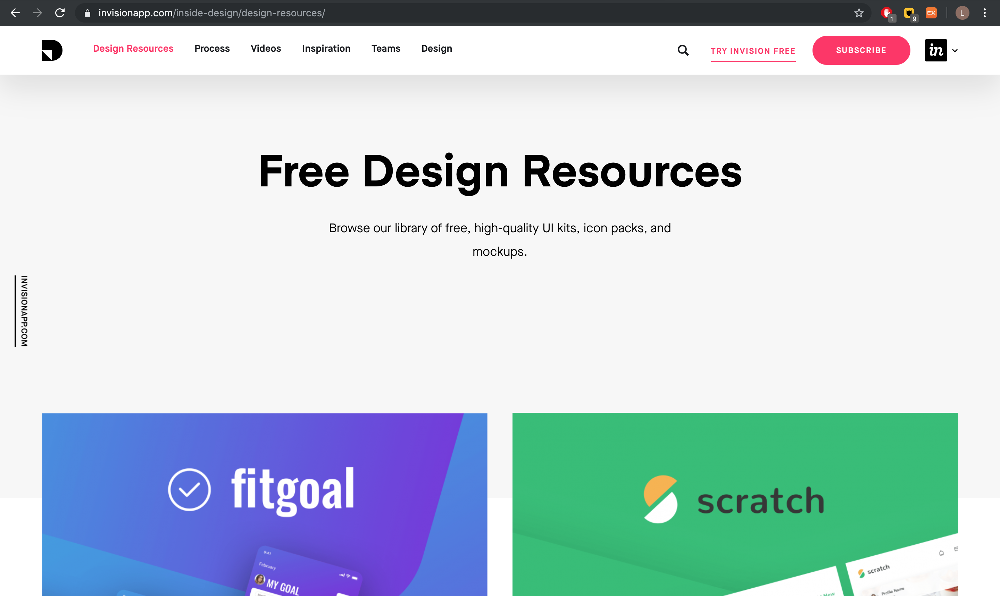

Invision App
This week, I discovered a helpful website for designers and developers, "Invision App." Like other on-line design forums, Invision provides blog posts of various design trends and helpful tips. When I entered the Design Resource tab, I found out that there were a lot of mockup files for public use. They had video tutorials on interesting design tools and features.
When I signed in, I found out that Invision also provides studio software, which could be helpful in creating quick prototypes or designs. I have not used the studio function and many other tools that Invision provides yet. I may have to try and look into the various features that Invision provides, so that I could use it in my future works.